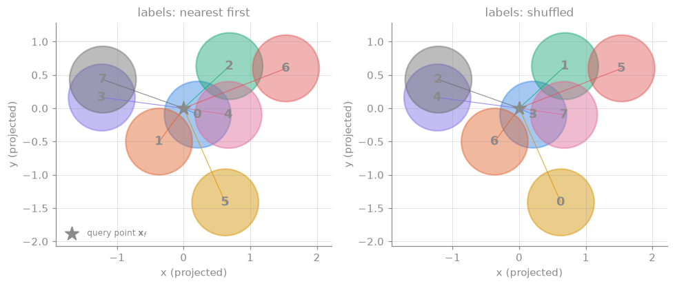
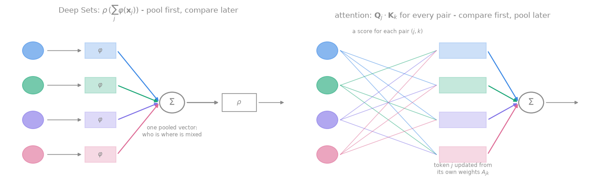
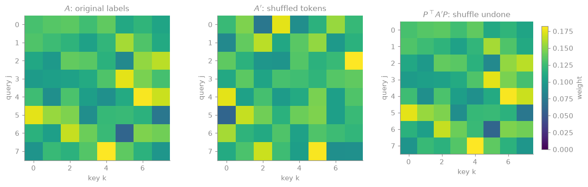
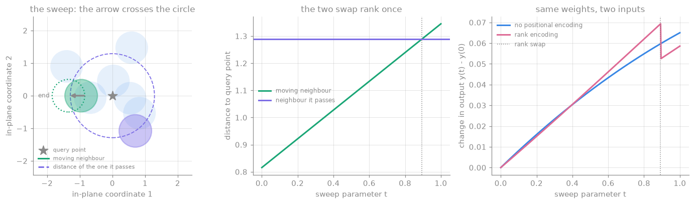
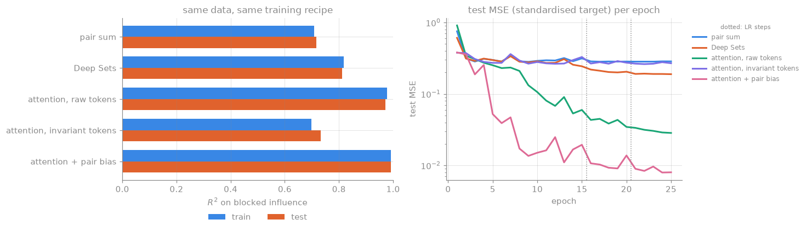
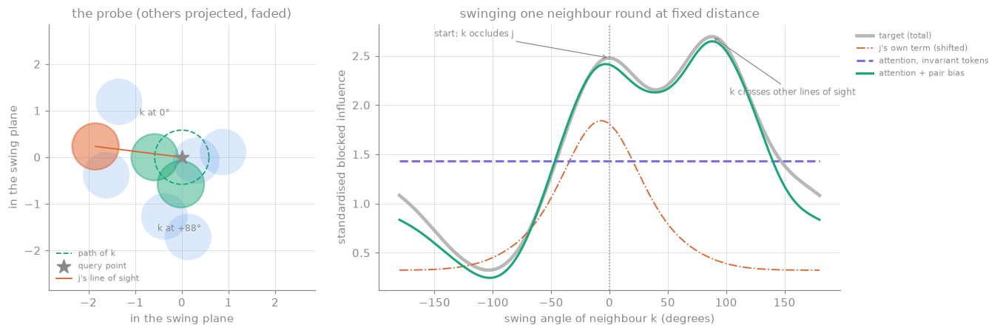

Why attention suits sets of particles#
What you will learn
Why self-attention without positional encodings is permutation-equivariant, and why a sum over tokens after it is permutation-invariant. You will prove both on paper and check them numerically.
How positional encodings break this. They fail the permutation check, and even with neighbours sorted nearest-first they make the output jump when two neighbours swap rank.
Why a sum of per-neighbour terms cannot fit a target where neighbours affect each other, how Deep Sets and attention compare on such a target, and how geometry enters attention through a pair bias rather than through token order. This is a preview of Lesson 05f.
Prerequisites: Lesson 02a (a query point and its \(M\) nearest neighbours, the offsets \(\mathbf x_{fj}\)), Lesson 05a (shielding, a three-body effect), and Lessons 05b and 05c (queries, keys and values; heads and masks). Equivariance under rotations is covered in the MolSSI e3nn course [The Molecular Sciences Software Institute (MolSSI), 2024]. This lesson is about a different symmetry: relabelling.
import copy, math, os, time
import numpy as np
import matplotlib.pyplot as plt
import torch
from course_utils import training as tr, metrics as mt, plotting as cplt
from course_utils.attention import attention, causal_mask, MultiHeadSelfAttention, TransformerBlock
from course_utils.equivariance import check_invariance, check_permutation, report
from course_utils.shielding import local_shielding_factor, shielding_weights
torch.set_num_threads(min(4, os.cpu_count() or 1)) # small models: a few threads are enough
T0 = time.time()
1. Particles have no order#
A model of the flow at a query point \(\mathbf x_f\) receives its \(M\) nearest particles. In code, they arrive as rows of a tensor: row 0, row 1, and so on up to row \(M-1\). The physics knows nothing about rows. If we swap rows 2 and 5, we describe exactly the same suspension, so the predicted velocity must not change.
A relabelling is a permutation \(\pi\) of \(\{1,\dots,M\}\). As a matrix, \(P\) has a single 1 in each row and each column, with \((P\mathbf X)_j = \mathbf X_{\pi(j)}\) for a stack of token features \(\mathbf X \in \mathbb R^{M\times d}\). There are two symmetry properties we care about:
An invariant \(f\) returns one answer for the whole set, for example the velocity at \(\mathbf x_f\). An equivariant \(F\) returns one row per token, and those rows move with the tokens, for example the message from each neighbour. Model A0 is built as \(\mathbf u = \sum_j \mathbf m_j\): an equivariant per-neighbour map followed by a sum, which is invariant because addition does not care about order.
Here is one neighbour set from the toy, drawn twice with two different labellings. Both pictures show the same suspension.
snaps = cu.make_snapshots(6)
snap = snaps[0]
rng = np.random.default_rng(3)
pts = snap.sample_exterior(64, rng=rng)
inp = cu.neighbour_inputs(pts, snap.positions, snap.slip, snap.phi_local, snap.density_ratio, M=8)
x_one = inp["x_fj"][0] # (8, 3) offsets x_f - r_j, nearest first
perm_demo = torch.tensor([5, 2, 7, 0, 3, 6, 1, 4])
IDENTITY = cplt.PALETTE + [cplt.SOLID_EDGE] # one colour per *particle*, kept across both panels
fig, axes = plt.subplots(1, 2, figsize=(9.0, 4.2))
for ax, order, title in ((axes[0], torch.arange(8), "labels: nearest first"),
(axes[1], perm_demo, "labels: shuffled")):
r = -x_one.numpy() # particle centre relative to the query point
ax.scatter([0], [0], marker="*", s=180, color=cplt.INK, label="query point $\\mathbf{x}_f$", zorder=3)
for j in range(8):
ax.add_patch(plt.Circle(r[j, :2], 0.5, facecolor=IDENTITY[j], alpha=0.45, edgecolor=IDENTITY[j], lw=1.5))
ax.plot([0, r[j, 0]], [0, r[j, 1]], color=IDENTITY[j], lw=0.8, alpha=0.7)
for new_label, j in enumerate(order.tolist()):
ax.text(*r[j, :2], str(new_label), ha="center", va="center", fontsize=12, fontweight="bold", color=cplt.INK)
ax.set_aspect("equal"), ax.set_title(title)
ax.set_xlabel("x (projected)"), ax.set_ylabel("y (projected)")
axes[0].legend(loc="lower left", fontsize=8)
plt.tight_layout()
plt.show()

Each colour is one particle, and it keeps its colour in both panels; only the number written on it changes. The particles are projected onto the \(x\)-\(y\) plane, so circles can overlap in the picture although the spheres do not overlap in 3D.
Deep Sets. Zaheer et al. proved that every permutation-invariant function of a set drawn from a countable domain can be written as [Zaheer et al., 2017]
with an encoder \(\varphi\) applied to each element, a sum, and a decoder \(\rho\) after the sum. For continuous inputs the story is subtler. Wagstaff et al. showed that for sets of \(M\) real numbers a latent (the output size of \(\varphi\)) of exactly \(M\) is necessary and sufficient for a continuous decomposition. Our elements are 3-vectors, and for those no such size is proved: just encoding a set of \(M\) vectors without loss needs at least \(3M\) numbers, and nothing guarantees that a given latent size is enough. A0 is the special case where \(\rho\) is the identity: no processing after the sum. Keep both forms in mind. Section 4 shows that they behave very differently on a target where neighbours affect each other.

Both are permutation-invariant. The difference is when neighbours meet. In Deep Sets, neighbour \(j\) and neighbour \(k\) only meet inside the pooled vector, after each has been encoded on its own. In attention, every pair meets in a score before anything is pooled. Section 4 shows what that order buys.
2. Attention is permutation-equivariant#
Self-attention on token features \(\mathbf X\) computes (Lesson 05b)
Proof of equivariance. Replace \(\mathbf X\) by \(P\mathbf X\).
The projections act on each row separately, so \(\mathbf Q \to P\mathbf Q\), \(\mathbf K\to P\mathbf K\) and \(\mathbf V\to P\mathbf V\).
The score matrix becomes \(P\mathbf Q\,(P\mathbf K)^\top = P\,\mathbf Q\mathbf K^\top P^\top\). Its rows and its columns are reordered in the same way.
A row-wise softmax does not care how the entries of a row are ordered, and it treats each row on its own. So \(\operatorname{softmax}(P S P^\top) = P\,\operatorname{softmax}(S)\,P^\top\).
The output is \(P A P^\top\,P\mathbf V = P\,A\mathbf V\), because \(P^\top P = I\).
So \(\operatorname{Attn}(P\mathbf X) = P\operatorname{Attn}(\mathbf X)\). Each token gets the same new features as before, just in a different row. The rest of a transformer block (Lesson 05e) is layer norm, a per-token MLP and residual additions, which act on each row separately and so are equivariant too. A sum over tokens at the end then gives an invariant output.
Notice what the proof does not need: any notion of which token is “first”. Attention compares every token with every other token through \(\mathbf Q_j\cdot\mathbf K_k\). Tokens are told apart only by their content.
We write single-head attention out by hand and check it against course_utils.attention.attention, which
Lesson 05b checked against PyTorch’s F.scaled_dot_product_attention (in float64 on the CPU, its plain math path):
torch.manual_seed(0)
d = 8
W_Q, W_K, W_V = (torch.randn(4, d, dtype=torch.float64) / 2 for _ in range(3))
def token_features(x_fj):
"""Raw per-token features [x_fj, |x_fj|] (4 numbers per neighbour)."""
return torch.cat([x_fj, x_fj.norm(dim=-1, keepdim=True)], -1)
def attn_by_hand(x_fj, return_weights=False):
X = token_features(x_fj)
Q, K, V = X @ W_Q, X @ W_K, X @ W_V
S = Q @ K.transpose(-2, -1) / math.sqrt(d)
A = torch.exp(S - S.amax(-1, keepdim=True))
A = A / A.sum(-1, keepdim=True)
return (A @ V, A) if return_weights else A @ V
X64 = inp["x_fj"] # (64 queries, 8 neighbours, 3), float64
Xf = token_features(X64)
ref = attention(Xf @ W_Q, Xf @ W_K, Xf @ W_V)
print(report("attention by hand vs course_utils", float((attn_by_hand(X64) - ref).abs().max()), 1e-12))
PASS attention by hand vs course_utils: max error 0.0e+00 (tol 1e-12)
Now the picture behind the proof. The left panel shows the attention weights \(A\) for the neighbour set of Section 1. The middle panel shows the weights after shuffling the tokens with the permutation of the right-hand drawing above: the matrix looks completely different. On the right we undo the shuffle, reordering both the rows and the columns, and get back exactly the left panel.

PASS P^T A' P vs A: max error 5.6e-17 (tol 1e-12) [weights of the shuffled set, unshuffled]
The same check, done properly with check_permutation over random permutations, for attention by hand,
for multi-head attention and a full transformer block from course_utils.attention, and for a sum over tokens
after the block:
torch.manual_seed(1)
mhsa = MultiHeadSelfAttention(width=16, heads=4).double().eval()
block = TransformerBlock(width=16, heads=4).double().eval()
embed = torch.nn.Linear(4, 16).double()
check_permutation(attn_by_hand, (X64,), axis=1, mode="equivariant", name="single-head attention")
check_permutation(lambda x: mhsa(embed(token_features(x))), (X64,), axis=1, mode="equivariant",
name="multi-head attention")
check_permutation(lambda x: block(embed(token_features(x))), (X64,), axis=1, mode="equivariant",
name="transformer block")
check_permutation(lambda x: block(embed(token_features(x))).sum(1), (X64,), axis=1, mode="invariant",
name="block, then sum over tokens");
PASS single-head attention: max error 3.4e-16 (tol 1e-12) [3 random permutations of axis 1 (equivariant)]
PASS multi-head attention: max error 2.8e-16 (tol 1e-12) [3 random permutations of axis 1 (equivariant)]
PASS transformer block: max error 3.4e-16 (tol 1e-12) [3 random permutations of axis 1 (equivariant)]
PASS block, then sum over tokens: max error 2.5e-16 (tol 1e-12) [3 random permutations of axis 1 (invariant)]
2.1 Pair quantities move with both indices#
Model B adds a pair-geometry bias \(b_{jk}\) to the scores (Lesson 05c introduced
additive biases). A bias is a matrix indexed by two tokens, so under a relabelling it must become
\(P B P^\top\): rows and columns move. Here is what goes wrong if only the rows move. check_permutation
permutes every argument along one axis, so if we pass a bias in as an extra input, it gets relabelled on its
first axis only, and the check fails:
def pair_distance(x_fj):
"""(B, M, M): |x_fj - x_fk| = |r_k - r_j|, the distance between neighbours j and k."""
return (x_fj[:, :, None] - x_fj[:, None]).norm(dim=-1)
def block_with_bias(x_fj, bias):
return block(embed(token_features(x_fj)), bias=-bias[:, None]) # one bias shared by the 4 heads
try:
check_permutation(block_with_bias, (X64, pair_distance(X64)), axis=1, mode="equivariant",
name="block, bias passed in and permuted on one axis only")
except AssertionError as err:
print("caught:", err)
FAIL block, bias passed in and permuted on one axis only: max error 2.2e-01 (tol 1e-12) [3 random permutations of axis 1 (equivariant)]
caught: block, bias passed in and permuted on one axis only: permutation error 2.212e-01 >= tol 1.0e-12
That failure belongs to the test, not to the block. Relabel the bias the way the rule says, on both axes, \(B \to PBP^\top\), and the same block passes:
B64 = pair_distance(X64)
with torch.no_grad():
out = block_with_bias(X64, B64)
gen = torch.Generator().manual_seed(0)
worst = 0.0
for _ in range(3):
p = torch.randperm(X64.shape[1], generator=gen)
out_p = block_with_bias(X64[:, p], B64[:, p][:, :, p]) # tokens -> PX, bias -> P B P^T
worst = max(worst, float((out_p - out[:, p]).abs().max()) / max(1.0, float(out.abs().max())))
print(report("block, bias passed in and relabelled on both axes", worst, 1e-12, "3 random permutations"))
PASS block, bias passed in and relabelled on both axes: max error 3.3e-16 (tol 1e-12) [3 random permutations]
So passing a bias in is fine, as long as whoever relabels the tokens also relabels the bias on both axes. The robust way to guarantee that is to compute the bias from the geometry, inside the model. Then a relabelled input automatically produces the relabelled bias \(P B P^\top\):
check_permutation(lambda x: block_with_bias(x, pair_distance(x)), (X64,), axis=1, mode="equivariant",
name="block, bias computed from x_fj inside");
PASS block, bias computed from x_fj inside: max error 3.3e-16 (tol 1e-12) [3 random permutations of axis 1 (equivariant)]
This is the rule model B follows: its bias is a function of the pair features \(P_{jk}\), which are computed from the offsets.
3. Positional encodings break the symmetry#
In a sentence, order carries meaning: “dog bites man” and “man bites dog” use the same tokens. A language transformer must know where each word sits, and attention alone cannot tell it. So it adds a positional encoding \(\mathbf p_i\) to the features of the token in slot \(i\). The original transformer uses sinusoids [Vaswani et al., 2017]:
Slot \(i\) now has a fingerprint, so the model can tell slot 0 from slot 5. For particles, that is exactly what we do not want. Below is a small set model that we will use for the rest of the lesson. Its options choose what the tokens carry, whether a pair bias is used, and whether a positional encoding is added.
def sinusoidal_encoding(n, d):
i = torch.arange(n, dtype=torch.float64)[:, None]
m = torch.arange(0, d, 2, dtype=torch.float64)[None]
pe = torch.zeros(n, d, dtype=torch.float64)
pe[:, 0::2] = torch.sin(i / 10000 ** (m / d))
pe[:, 1::2] = torch.cos(i / 10000 ** (m / d))
return pe
def pair_features(x_fj, eps=1e-12):
"""(B, M, M, 2): |x_fj - x_fk| and x^_fj . x^_fk, both invariant under rotations and reflections.
These are two of model B's five pair invariants P_jk (its first and last); the other three involve the
particle states e_j. As in model B, the distances r_j are *not* here: they live in the tokens."""
r = x_fj.norm(dim=-1).clamp_min(eps)
xh = x_fj / r[..., None]
d_jk = pair_distance(x_fj)
cos_jk = (xh[:, :, None] * xh[:, None]).sum(-1)
return torch.stack([d_jk, cos_jk], -1)
class SetAttention(torch.nn.Module):
"""Transformer over the M neighbours, scalar output y = sum_j Linear(LN h_j).
tokens='raw' h_j = MLP([x_fj, |x_fj|]) (sees directions, so it is not rotation-invariant)
tokens='invariant' h_j = MLP(|x_fj|) (sees only its own distance)
pair_bias=True logits += MLP(pair_features)_{jk}, one per layer and head (the model B idea)
pair_features = (|x_fj - x_fk|, x^_fj . x^_fk); the distances stay in the tokens
pos_enc=True h_j += sinusoidal encoding of row j (what language models do)
"""
def __init__(self, width=32, depth=2, heads=4, tokens="raw", pair_bias=False, pos_enc=False):
super().__init__()
self.tokens, self.depth, self.heads, self.pos_enc = tokens, depth, heads, pos_enc
n_in = 4 if tokens == "raw" else 1
self.embed = torch.nn.Sequential(torch.nn.Linear(n_in, width), torch.nn.GELU(), torch.nn.Linear(width, width))
self.blocks = torch.nn.ModuleList([TransformerBlock(width, heads, ffn_mult=2) for _ in range(depth)])
self.ln_f = torch.nn.LayerNorm(width)
self.head = torch.nn.Linear(width, 1)
self.bias_mlp = (torch.nn.Sequential(torch.nn.Linear(2, 16), torch.nn.GELU(), torch.nn.Linear(16, depth * heads))
if pair_bias else None)
self.register_buffer("pe", sinusoidal_encoding(64, width).float())
def encoding(self, M_):
"""The vector added to the token in slot i (rows 0..M_-1)."""
return self.pe[:M_]
def per_token(self, scalars, e_j, x_fj):
B, M_ = x_fj.shape[:2]
f = token_features(x_fj) if self.tokens == "raw" else x_fj.norm(dim=-1, keepdim=True)
h = self.embed(f)
if self.pos_enc:
h = h + self.encoding(M_).to(h.dtype)
bias = None
if self.bias_mlp is not None:
bias = self.bias_mlp(pair_features(x_fj)).permute(0, 3, 1, 2).reshape(B, self.depth, self.heads, M_, M_)
for l, blk in enumerate(self.blocks):
h = blk(h, bias=None if bias is None else bias[:, l])
return self.head(self.ln_f(h))[..., 0] # (B, M): one number per token
def forward(self, scalars, e_j, x_fj): # same call signature as the course models
return self.per_token(scalars, e_j, x_fj).sum(1)
The same network with and without a positional encoding, untrained, in float64:
args64 = (inp["scalars"], inp["e_j"], inp["x_fj"])
torch.manual_seed(2)
no_pe = SetAttention(tokens="raw").double().eval()
with_pe = copy.deepcopy(no_pe)
with_pe.pos_enc = True # identical weights, plus the encoding
check_permutation(no_pe, args64, axis=1, mode="invariant", name="set model, no positional encoding")
try:
check_permutation(with_pe, args64, axis=1, mode="invariant", name="set model + positional encoding")
except AssertionError as err:
print("caught:", err)
PASS set model, no positional encoding: max error 6.3e-16 (tol 1e-12) [3 random permutations of axis 1 (invariant)]
FAIL set model + positional encoding: max error 7.7e-02 (tol 1e-12) [3 random permutations of axis 1 (invariant)]
caught: set model + positional encoding: permutation error 7.728e-02 >= tol 1.0e-12
A causal mask, which lets token \(j\) attend only to tokens \(k \le j\) (Lesson 05c), breaks the symmetry in the same way. It also gives the slots an order:
def causal_attention(x_fj):
X = token_features(x_fj)
return attention(X @ W_Q, X @ W_K, X @ W_V, mask=causal_mask(x_fj.shape[1]))
try:
check_permutation(causal_attention, (X64,), axis=1, mode="equivariant", name="attention with a causal mask")
except AssertionError as err:
print("caught:", err)
FAIL attention with a causal mask: max error 1.5e+00 (tol 1e-12) [3 random permutations of axis 1 (equivariant)]
caught: attention with a causal mask: permutation error 1.521e+00 >= tol 1.0e-12
3.1 “But the neighbours are sorted nearest-first”#
There is a fair objection. neighbour_inputs returns the neighbours sorted by distance, so row 0 is always
the nearest particle. If we always sort before calling the model, the input order is a function of the set
itself. The model with a positional encoding then sees a rank encoding, and the relabelling test above,
which skips the sort, no longer applies. Is a rank encoding harmless?
It is not, because ranks change abruptly. Move one neighbour smoothly outward. When it passes another neighbour’s distance, the two swap rows, and their encodings swap with them. The geometry changed by an infinitesimal amount, but the network input changed by a finite amount, so the prediction jumps. A velocity field predicted that way would have seams wherever two neighbours are equidistant from the query point. When two distances are exactly equal, the output even depends on how the sort breaks the tie.
Let us measure it. We take the neighbour set of Section 1 and slide the third-nearest particle radially outward until it passes the fourth. Both stay inside the set of 8, so no particle enters or leaves the set during the sweep.
def sorted_call(model, x_fj):
"""Sort the neighbours nearest-first (as neighbour_inputs does), then evaluate."""
order = x_fj.norm(dim=-1).argsort(dim=1, stable=True)
x_sorted = torch.take_along_dim(x_fj, order[..., None], dim=1)
zeros = torch.zeros_like(x_sorted)
return model(zeros, zeros, x_sorted)
r_one = x_one.norm(dim=-1)
mover, other = 2, 3
ts = torch.linspace(0, 1, 401, dtype=torch.float64)
r_path = (r_one[1] + r_one[2]) / 2 + ts * ((r_one[3] + r_one[4]) / 2 - (r_one[1] + r_one[2]) / 2)
X_path = x_one.repeat(len(ts), 1, 1)
X_path[:, mover] = x_one[mover] / r_one[mover] * r_path[:, None] # same direction, new distance
with torch.no_grad():
y_pe = sorted_call(with_pe, X_path)
y_no = sorted_call(no_pe, X_path)
def jump_stats(y):
dy = (y[1:] - y[:-1]).abs()
return float(dy.max()), float(dy.median())
for name, y in (("with rank encoding", y_pe), ("no encoding", y_no)):
big, typical = jump_stats(y)
print(f"{name:20s} largest step {big:.2e} median step {typical:.2e} ratio {big / typical:8.1f}")
with rank encoding largest step 1.68e-02 median step 1.95e-04 ratio 86.2
no encoding largest step 2.09e-04 median step 1.62e-04 ratio 1.3

Without an encoding, the output changes smoothly along the sweep. With the rank encoding, it jumps at the moment of the swap: the largest step is many times the typical step. The left panel shows why: the dashed circle marks the distance of the neighbour being passed, and the rank swap happens exactly where the arrow crosses it. The network is untrained here. Training changes the size of the jump, but nothing in the loss forces it to vanish, and a trained model that actually uses the rank information must jump.
Nearest-\(M\) truncation has a similar seam of its own. When the \(M\)-th and \((M{+}1)\)-th particles swap, one particle leaves the set and another enters. That seam is the price of a finite neighbour list, and weighting distant neighbours weakly keeps it small. A rank encoding adds a second, avoidable seam at every pair of equal distances inside the set. So for sets of neighbours, the rule is simple: no positional encoding. The research models follow it: their tokens carry no index, and their attention has no mask. The only additive term in the scores is the pair bias.
4. A sum of neighbours versus attention#
Permutation symmetry restricts what a model may do. It does not say how expressive the model is. A0 and attention models are both invariant, so what does attention buy? It lets each neighbour’s contribution depend on the other neighbours. To see this, we need a target where neighbours affect each other.
The target: blocked influence. We reuse the shielding rule of Lesson 05a. Neighbour \(k\) occludes neighbour \(j\) with weight \(w_k(j)\in[0,1]\) when it sits close to the straight segment from \(j\) to the query point. The weight depends on where \(k\) sits relative to \(j\). The factor \(S_j = \prod_{k\neq j}(1-\sigma\,w_k(j))\) is how much of \(j\)’s influence gets through. We ask the models for a scalar, the total influence that is blocked:
with particle radius \(a = 0.5\), \(\sigma = 0.9\) and occlusion width \(0.5\). A scalar keeps the focus on the set structure; Lesson 05f does the same with vector outputs. Every term needs at least two neighbours: if no other neighbour is in the way, \(S_j = 1\) and the term is zero.

Fig. 5 Still from the course animation on attention. Neighbour B hides behind A. In a plain sum (left), every neighbour has weight 1 whatever A does. With attention and a pair bias (right), B’s weight drops relative to C’s when A is in the line of sight. The full animation, with an interactive 3D version, plays in Lesson 05a, Section 3.#
The target uses only offsets, distances and dot products, so it is permutation-invariant and invariant under rotations and reflections. We check both before training anything:
SIGMA, OCC_WIDTH, M = 0.9, 0.5, 8
def blocked_influence(scalars, e_j, x_fj):
r = x_fj.norm(dim=-1)
S = local_shielding_factor(x_fj, SIGMA, OCC_WIDTH)
return (torch.exp(-(r - 0.5) / 2) * (1 - S)).sum(1)
check_permutation(blocked_influence, args64, axis=1, mode="invariant", name="target, neighbour order")
check_invariance(blocked_influence, args64, ("scalar", "vector", "vector"), name="target, O(3)");
PASS target, neighbour order: max error 4.7e-16 (tol 1e-12) [3 random permutations of axis 1 (invariant)]
PASS target, O(3): max error 1.9e-15 (tol 1e-12) [5 random g in O(3), det = [-1, 1]]
Now the data: 2500 query points in each of six toy suspensions, the 8 nearest neighbours of each point, four suspensions for training and two for testing. We split by suspension, never by row (Lesson 04a). The target is standardised with the training mean and standard deviation.
t = time.time()
data = cu.make_dataset(snaps, n_points=2500, M=M, state="true", seed=0)
data["y"] = blocked_influence(data["scalars"], data["e_j"], data["x_fj"])
train_set, test_set = tr.split_by_snapshot(data, [0, 1, 2, 3], [4, 5])
mu, sd = train_set["y"].mean(), train_set["y"].std()
for part in (train_set, test_set):
part["y"] = ((part["y"] - mu) / sd).float()
for k in ("scalars", "e_j", "x_fj"):
part[k] = part[k].float()
print(f"train {len(train_set['y'])} rows, test {len(test_set['y'])} rows ({time.time() - t:.1f} s)")
train 10000 rows, test 5000 rows (0.8 s)
Five models. All five are permutation-invariant by construction. They differ in how they combine neighbours and in what each token carries:
model |
per-token input |
how tokens are combined |
neighbours interact? |
rotation-invariant? |
|---|---|---|---|---|
pair sum (A0’s sum structure) |
\([\mathbf x_{fj}, r_j]\) |
\(\sum_j \varphi(\cdot)\) |
no |
no |
Deep Sets |
\([\mathbf x_{fj}, r_j]\) |
\(\rho\big(\sum_j \varphi(\cdot)\big)\) |
only after pooling |
no |
attention, raw tokens |
\([\mathbf x_{fj}, r_j]\) |
attention, then \(\sum_j\) |
yes, through \(\mathbf Q_j\cdot\mathbf K_k\) |
no |
attention, invariant tokens |
\(r_j\) only |
attention, then \(\sum_j\) |
yes, but blind to angles |
yes |
attention, invariant tokens + pair bias |
\(r_j\), plus pair features |
attention with bias \(b(P_{jk})\), then \(\sum_j\) |
yes |
yes |
The first three see the same raw information, so any difference between them comes from structure. They
read the components of \(\mathbf x_{fj}\) directly, so unlike A0, which is rotation-equivariant by
construction, they are not rotation-invariant; only the permutation structure of the pair sum is A0’s.
The pair sum and Deep Sets are written below; the attention models are SetAttention.
def mlp(n_in, width, n_out, depth):
layers, n = [], n_in
for _ in range(depth):
layers += [torch.nn.Linear(n, width), torch.nn.GELU()]
n = width
return torch.nn.Sequential(*layers, torch.nn.Linear(n, n_out))
class PairSum(torch.nn.Module):
"""y = sum_j phi([x_fj, r_j]): no processing after the sum (the structure of A0)."""
def __init__(self, width=64):
super().__init__()
self.phi = mlp(4, width, 1, 3)
def forward(self, scalars, e_j, x_fj):
return self.phi(token_features(x_fj))[..., 0].sum(1)
class DeepSets(torch.nn.Module):
"""y = rho(sum_j phi([x_fj, r_j])) with a 32-dimensional latent (= 4M; not proved sufficient for vector sets)."""
def __init__(self, width=64, latent=32):
super().__init__()
self.phi, self.rho = mlp(4, width, latent, 3), mlp(latent, width, 1, 2)
def forward(self, scalars, e_j, x_fj):
return self.rho(self.phi(token_features(x_fj)).sum(1))[..., 0]
ARMS = {
"pair sum": lambda: PairSum(),
"Deep Sets": lambda: DeepSets(),
"attention, raw tokens": lambda: SetAttention(tokens="raw"),
"attention, invariant tokens": lambda: SetAttention(tokens="invariant"),
"attention + pair bias": lambda: SetAttention(tokens="invariant", pair_bias=True),
}
for name, make in ARMS.items():
torch.manual_seed(0)
print(f"{name:28s} {sum(p.numel() for p in make().parameters()):6,d} parameters")
pair sum 8,705 parameters
Deep Sets 17,057 parameters
attention, raw tokens 18,401 parameters
attention, invariant tokens 18,305 parameters
attention + pair bias 18,489 parameters
The parameter counts are similar, except that the pair sum is smaller. It has no decoder, and adding parameters to \(\varphi\) would not change what it can represent. We train every model with the same recipe (Adam, batch 128, 25 epochs, seed 0, float32), using the course’s shared loop. The learning rate steps down from \(2\times10^{-3}\) (15 epochs) to \(7\times10^{-4}\) (5 epochs) to \(2\times10^{-4}\) (5 epochs). With a constant rate, the last epoch of these models is noisy: the test error can spike noticeably from one epoch to the next, and a single final number would then say more about the luck of that epoch than about the model. To show how settled each result is, we also print the spread of test \(R^2\) over the last five epochs.
def r2_scalar(pred, target):
"""R^2 of a scalar target (mt.r2 expects one column per component)."""
return mt.r2(pred.reshape(-1, 1), target.reshape(-1, 1))
SCHEDULE = ((15, 2e-3), (5, 7e-4), (5, 2e-4)) # (epochs, learning rate): a step decay
def train_stepped(model):
"""tr.train once per stage, on the same model; each stage gets its own minibatch seed."""
h = {"loss": [], "val": [], "seconds": []}
t_off = 0.0
for stage, (n_ep, lr) in enumerate(SCHEDULE):
hs = tr.train(model, train_set, epochs=n_ep, lr=lr, batch=128, seed=stage, val=test_set, verbose=False)
h["loss"] += hs["loss"]
h["val"] += hs["val"]
h["seconds"] += [s + t_off for s in hs["seconds"]]
t_off = h["seconds"][-1]
return h
var_test = float(test_set["y"].var(unbiased=False))
trained, hist, scores = {}, {}, {}
for name, make in ARMS.items():
torch.manual_seed(0)
model = make()
hist[name] = train_stepped(model)
trained[name] = model
scores[name] = (r2_scalar(tr.predict(model, train_set), train_set["y"]),
r2_scalar(tr.predict(model, test_set), test_set["y"]))
late = [1 - v / var_test for v in hist[name]["val"][-5:]]
print(f"{name:28s} train R2 {scores[name][0]:.3f} test R2 {scores[name][1]:.3f}"
f" (last 5 epochs {min(late):.3f}-{max(late):.3f}, {hist[name]['seconds'][-1]:.0f} s)")
pair sum train R2 0.709 test R2 0.717 (last 5 epochs 0.716-0.719, 1 s)
Deep Sets train R2 0.817 test R2 0.812 (last 5 epochs 0.809-0.812, 2 s)
attention, raw tokens train R2 0.977 test R2 0.972 (last 5 epochs 0.967-0.972, 5 s)
attention, invariant tokens train R2 0.698 test R2 0.733 (last 5 epochs 0.724-0.740, 5 s)
attention + pair bias train R2 0.992 test R2 0.992 (last 5 epochs 0.990-0.992, 7 s)

Read the figure from the top.
The pair sum stops well short of a good fit. It still explains part of the variance, because shielding is more likely for distant neighbours, and a function of \(\mathbf x_{fj}\) alone can learn that average trend. It cannot do more. Its contribution from \(j\) cannot change when \(k\) moves into the line of sight, so no training recipe closes this gap.
Deep Sets does better. The decoder \(\rho\) acts after the sum, so it is free of the pair sum’s structural limit: it can, in principle, combine information about several neighbours. Section 1 noted that for sets of vectors no latent size is proved to make the representation exact, and in any case the model must compress every pair relation into a single pooled vector before any comparison can happen, then decode those relations from the sum. That is hard at this size and budget. Exercise 1 asks how much of the gap more width and epochs close.
Attention on raw tokens fits clearly better. The score \(\mathbf Q_j\cdot\mathbf K_k\) compares two neighbours directly, so “is \(k\) between \(j\) and the query point?” is a question each pair can ask.
Attention on invariant tokens sees only the distances \(r_j\), and does about as well as the pair sum. It has the machinery for interactions but lacks the information: a list of distances says nothing about the angle between two neighbours, and occlusion is all about angles.
Attention with a pair bias gets the angles back through the pair features and fits best of all.
5. How geometry enters instead: a preview of model B#
Section 3 removed the positional encoding, and with it the only signal that told tokens apart besides their content. Section 4 showed that the content must then include relative geometry. There are two ways to supply it, and they differ in symmetry.
Raw coordinates in the tokens work well, but the network sees the components of \(\mathbf x_{fj}\), so its output changes when we rotate the suspension. The target does not change, so this is an error. The same holds for the pair sum and Deep Sets, which read the same raw tokens. Checked on float64 copies, with reflections included:
models64 = {n: copy.deepcopy(m).double().eval() for n, m in trained.items()}
test64 = tuple(test_set[k][:64].double() for k in ("scalars", "e_j", "x_fj"))
KINDS = ("scalar", "vector", "vector")
for n in ("pair sum", "Deep Sets", "attention, raw tokens"):
try:
check_invariance(models64[n], test64, KINDS, name=f"{n}: O(3)")
except AssertionError as err:
print("caught:", err)
FAIL pair sum: O(3): max error 1.7e-01 (tol 1e-12) [5 random g in O(3), det = [-1, 1]]
caught: pair sum: O(3): equivariance error 1.685e-01 >= tol 1.0e-12
FAIL Deep Sets: O(3): max error 4.9e-01 (tol 1e-12) [5 random g in O(3), det = [-1, 1]]
caught: Deep Sets: O(3): equivariance error 4.903e-01 >= tol 1.0e-12
FAIL attention, raw tokens: O(3): max error 3.1e-01 (tol 1e-12) [5 random g in O(3), det = [-1, 1]]
caught: attention, raw tokens: O(3): equivariance error 3.098e-01 >= tol 1.0e-12
Invariant tokens plus a pair bias keep every symmetry. Tokens carry only invariants (here the distance \(r_j\)), and the relative geometry enters through the pair features of each pair \((j, k)\): their separation \(|\mathbf x_{fj}-\mathbf x_{fk}|\) and the cosine of the angle between them seen from the query point, \(\hat{\mathbf x}_{fj}\cdot\hat{\mathbf x}_{fk}\). A small MLP turns these two numbers into one bias per layer and head, added to the scores. They are two of the five pair invariants in model B’s \(P_{jk}\) (its first and last); the other three are dot products involving the particle states \(\mathbf e_j\), which this scalar target does not need. As in model B, the distances \(r_j\) and \(r_k\) are not in the pair features. They sit in the tokens, so the bias alone cannot compute the occlusion weight, and only the bias together with the content score \(\mathbf Q_j\cdot\mathbf K_k\) can (Lesson 05f works this out).
for n in ("pair sum", "Deep Sets", "attention, raw tokens", "attention, invariant tokens", "attention + pair bias"):
check_permutation(models64[n], test64, axis=1, mode="invariant", name=f"{n}: neighbour order")
for n in ("attention, invariant tokens", "attention + pair bias"):
check_invariance(models64[n], test64, KINDS, name=f"{n}: O(3)")
PASS pair sum: neighbour order: max error 3.3e-16 (tol 1e-12) [3 random permutations of axis 1 (invariant)]
PASS Deep Sets: neighbour order: max error 2.1e-16 (tol 1e-12) [3 random permutations of axis 1 (invariant)]
PASS attention, raw tokens: neighbour order: max error 6.2e-16 (tol 1e-12) [3 random permutations of axis 1 (invariant)]
PASS attention, invariant tokens: neighbour order: max error 3.3e-16 (tol 1e-12) [3 random permutations of axis 1 (invariant)]
PASS attention + pair bias: neighbour order: max error 6.4e-16 (tol 1e-12) [3 random permutations of axis 1 (invariant)]
PASS attention, invariant tokens: O(3): max error 1.1e-15 (tol 1e-12) [5 random g in O(3), det = [-1, 1]]
PASS attention + pair bias: O(3): max error 1.1e-15 (tol 1e-12) [5 random g in O(3), det = [-1, 1]]
All five trained models are exactly permutation-invariant, as the table promised. Only the two with invariant tokens are also O(3)-invariant; the other three were caught above.
Why invariant tokens alone are not enough: a probe. Pick a test point and a neighbour \(k\) that occludes another neighbour \(j\). Now swing \(k\) around the query point on a circle, keeping its distance \(r_k\) fixed. It leaves \(j\)’s line of sight, travels round, and comes back. On the way it may also pass in front of, or behind, other neighbours, so we split the target into \(j\)’s own term \(g(r_j)(1-S_j)\) and everything else. The model with invariant tokens and no bias sees exactly the same input at every angle (its tokens are the distances, which do not change), so its output must stay constant to round-off. The pair-bias model can follow the target. (This is a thought experiment: we ignore the fact that \(k\) may overlap other particles on its way round.)
with torch.no_grad():
W_occ = shielding_weights(test64[2], OCC_WIDTH) # (64, M, M): w_k(j)
g_j = torch.exp(-(test64[2].norm(dim=-1) - 0.5) / 2)
b, j, k = np.unravel_index(int((W_occ * g_j[:, :, None]).argmax()), W_occ.shape)
x0 = test64[2][b:b + 1]
axis_n = torch.linalg.cross(x0[0, j], x0[0, k])
axis_n = axis_n / axis_n.norm()
def rotate_about(v, n, th):
"""Rodrigues' formula: rotate v about the unit axis n by the angle th."""
return v * math.cos(th) + torch.linalg.cross(n, v) * math.sin(th) + n * (n @ v) * (1 - math.cos(th))
thetas = np.linspace(-np.pi, np.pi, 181)
X_swing = x0.repeat(len(thetas), 1, 1)
for i, th in enumerate(thetas):
X_swing[i, k] = rotate_about(x0[0, k], axis_n, float(th))
z = torch.zeros_like(X_swing)
with torch.no_grad():
swing = {"target": (blocked_influence(z, z, X_swing) - mu.double()) / sd.double(),
"attention, invariant tokens": models64["attention, invariant tokens"](z, z, X_swing),
"attention + pair bias": models64["attention + pair bias"](z, z, X_swing)}
terms = torch.exp(-(X_swing.norm(dim=-1) - 0.5) / 2) * (1 - local_shielding_factor(X_swing, SIGMA, OCC_WIDTH))
j_term = terms[:, j] / sd.double() # j's own blocked influence, in standardised units
for n, y in swing.items():
print(f"{n:28s} range over the swing {float(y.max() - y.min()):.3e}")
print(report("invariant tokens, no bias: output constant", float((swing["attention, invariant tokens"]
- swing["attention, invariant tokens"][0]).abs().max()), 1e-12, "r_k fixed, k swung round"))
print(report("target = j's term + the rest", float((terms.sum(1) - (swing["target"] * sd.double() + mu.double())).abs().max()),
1e-12, "the split is exact"))
i_peak = int(swing["target"].argmax())
print(f"target peaks at {np.degrees(thetas[i_peak]):+.0f} deg; there j's term is {float(j_term[i_peak]):.3f}"
f" (vs {float(j_term[len(thetas) // 2]):.3f} at 0 deg)")
target range over the swing 2.372e+00
attention, invariant tokens range over the swing 2.442e-15
attention + pair bias range over the swing 2.402e+00
PASS invariant tokens, no bias: output constant: max error 1.6e-15 (tol 1e-12) [r_k fixed, k swung round]
PASS target = j's term + the rest: max error 2.2e-16 (tol 1e-12) [the split is exact]
target peaks at +88 deg; there j's term is 0.194 (vs 1.561 at 0 deg)

The dash-dotted curve is \(j\)’s own term. It is largest near \(0°\), where \(k\) sits in \(j\)’s line of sight, and it falls away on both sides as \(k\) leaves it. The total target has extra peaks elsewhere on the circle, where \(k\) passes in front of, or behind, other neighbours: the target counts every blocked line of sight, not just \(j\)’s. The flat dashed line is the failure in one picture. Without relative geometry, attention can only shuffle information that each token already has, and a token’s distance does not say where it is relative to the others. The pair bias is the door through which relative geometry enters. It is an invariant pair quantity computed inside the model, so it moves with both indices under relabelling (Section 2.1) and does not change under rotations.
Lesson 05f builds the full model B on this idea. The output there is a vector, written as invariant coefficients times \(\mathbf x_{fj}\) and \(\mathbf e_j\), so it rotates correctly while the attention stays invariant.
Summary#
Neighbours have no natural order, so a model of the flow at a point must be permutation-invariant, and per-neighbour quantities must be permutation-equivariant.
Self-attention without positional encodings is permutation-equivariant, because \(\operatorname{softmax}(PSP^\top) = P\operatorname{softmax}(S)P^\top\). Per-token layers keep this property, and a final sum makes the output invariant. We verified each step to round-off.
A pair quantity such as an attention bias must move as \(PBP^\top\). Computing it from the geometry inside the model guarantees this.
Positional encodings and causal masks break the symmetry. Even with neighbours sorted by distance, a rank encoding makes predictions jump whenever two neighbours swap rank, so sets of neighbours get none.
A sum of per-neighbour terms cannot let one neighbour change another’s contribution. Deep Sets removes that structural limit with a decoder after the sum, but must squeeze every pair relation through one pooled vector and learns slowly. Attention compares neighbours pair by pair and fits such targets much better.
Without positions, relative geometry must enter through the content. Raw coordinates break rotation symmetry. Invariant tokens plus an invariant pair bias keep every symmetry. This is the idea model B builds on; its full pair features also involve the particle states.
Exercises#
How far can Deep Sets go? Train
DeepSets(width=128, latent=64)for 60 epochs and compare its test \(R^2\) with the table. Then train the pair sum for 60 epochs as well. Which gap closes, and which does not?Learned positional embeddings. Replace the sinusoidal encoding with a learned table
torch.nn.Parameter(torch.randn(M, width)). Check thatcheck_permutationstill fails, and explain why the kind of encoding makes no difference.An equivariant Deep Sets layer. Zaheer et al. also give the general permutation-equivariant linear layer \(F(\mathbf X) = \mathbf X\Lambda + \mathbf 1\,\mathbf 1^\top \mathbf X\,\Gamma\), which acts on each token and adds a term shared by all tokens. Implement it with random \(\Lambda\), \(\Gamma\), check it with
check_permutation(..., mode="equivariant"), and say why a single such layer cannot tell which other neighbour is in the line of sight, while a single attention layer can.Mean or sum? Real neighbour lists can have different lengths (padding, Lesson 05c). Train two pair-bias
SetAttentionmodels on \(M=8\) sets, one pooling with \(\sum_j\) and one with \(\frac1M\sum_j\), then evaluate both on sets of the \(M=6\) nearest neighbours. Train on \(y/\sigma_y\) without subtracting the mean, so that a sum over tokens really is a total. Which pooling generalises to the smaller sets, and which one has the more sensible meaning for blocked influence?
Solution 1
for name, make in (("Deep Sets, wide", lambda: DeepSets(width=128, latent=64)), ("pair sum", lambda: PairSum())):
torch.manual_seed(0)
m = make()
tr.train(m, train_set, epochs=60, lr=2e-3, batch=128, seed=0, verbose=False)
print(name, "test R2:", round(r2_scalar(tr.predict(m, test_set), test_set["y"]), 3))
Deep Sets improves with width and epochs: its decoder after the sum lifts the pair sum’s structural limit, so more capacity and training buy accuracy (although exact representation of this target at a given latent size is not guaranteed for sets of vectors). The pair sum barely moves: no choice of \(\varphi\) lets neighbour \(k\) change neighbour \(j\)’s term, so its ceiling is structural. Attention reaches a better fit than either in fewer epochs, because it can compare two neighbours directly. (This takes about a minute on a CPU.)
Solution 2
class LearnedPE(SetAttention):
"""A learned table, one trainable vector per slot, in place of the sinusoids."""
def __init__(self, **kw):
super().__init__(pos_enc=True, **kw)
self.table = torch.nn.Parameter(0.1 * torch.randn(M, self.head.in_features))
def encoding(self, M_):
return self.table[:M_]
torch.manual_seed(0)
m = LearnedPE(tokens="raw").double().eval()
try:
check_permutation(m, args64, axis=1, mode="invariant", name="learned positional embedding")
except AssertionError as err:
print("caught:", err)
Any table indexed by the slot gives slot \(i\) a fingerprint that does not move when the tokens are relabelled. Sinusoids, learned vectors and rotary encodings all do this by design, so they all fail. Here the table is a real parameter, so training would change its values, but not the fact that it is indexed by the slot.
Solution 3
torch.manual_seed(0)
Lam, Gam = torch.randn(4, 6, dtype=torch.float64), torch.randn(4, 6, dtype=torch.float64)
def ds_layer(x_fj):
X = token_features(x_fj)
return X @ Lam + X.sum(1, keepdim=True) @ Gam
check_permutation(ds_layer, (X64,), axis=1, mode="equivariant", name="Deep Sets equivariant layer");
Relabelling permutes \(\mathbf X\) and leaves the column sums \(\mathbf 1^\top\mathbf X\) unchanged, so the output is permuted the same way. But every token receives the same pooled term \(\mathbf 1^\top\mathbf X\,\Gamma\). Token \(j\) learns what the set contains, not where each member sits relative to \(j\). Attention gives each token its own weighted average, with weights that depend on the pair \((j, k)\).
Solution 4
class MeanPooled(SetAttention):
def forward(self, scalars, e_j, x_fj):
return self.per_token(scalars, e_j, x_fj).mean(1)
# Train on y / sd with no mean shift, so a sum over tokens is a total of per-token shares.
unshift = lambda part: {**part, "y": part["y"] + (mu / sd).float()} # (Y - mu)/sd + mu/sd = Y/sd
train_u, test_u = unshift(train_set), unshift(test_set)
sub6 = {kk: test_u[kk][:, :6] for kk in ("scalars", "e_j", "x_fj")} # the 6 nearest of each set
sub6["y"] = (blocked_influence(*(sub6[kk].double() for kk in ("scalars", "e_j", "x_fj"))) / sd).float()
for name, cls in (("sum", SetAttention), ("mean", MeanPooled)):
torch.manual_seed(0)
m = cls(tokens="invariant", pair_bias=True)
for stage, (n_ep, lr) in enumerate(SCHEDULE):
tr.train(m, train_u, epochs=n_ep, lr=lr, batch=128, seed=stage, verbose=False)
print(f"{name:5s} pooling R2 on M=8 test {r2_scalar(tr.predict(m, test_u), test_u['y']):.3f}"
f" R2 on M=6 sets {r2_scalar(tr.predict(m, sub6), sub6['y']):.3f}")
Blocked influence is a total over neighbours, so with fewer neighbours the true value is smaller, and a sum has the right meaning: each token contributes its own share, and dropping two tokens drops their shares. A mean divides by the number of tokens, so it implicitly rescales every share when the set shrinks; on \(M=8\) test sets both pool equally well, but on \(M=6\) sets the mean-pooled model is off by that rescaling. Neither is exact on the smaller sets, because the model never saw sets of 6 during training (and with two neighbours gone, the remaining shares change too). A padding mask (Lesson 05c) is the clean way to train on mixed sizes. (This takes about a minute on a CPU.)
References#
MolSSI e3nn course [The Molecular Sciences Software Institute (MolSSI), 2024], for rotation and reflection symmetry: https://molssi-ai.github.io/e3nn-course/book/intro.html.
M. Zaheer et al., Deep Sets [Zaheer et al., 2017]: the sum-decomposition of invariant set functions and the equivariant linear layer of Exercise 3.
E. Wagstaff, F. Fuchs, M. Engelcke, I. Posner and M. Osborne, On the limitations of representing functions on sets, ICML 2019, https://arxiv.org/abs/1901.09006: for sets of \(M\) real numbers, a latent of size \(M\) is necessary (their Theorem 4.1) and sufficient (Theorem 4.3) for a continuous sum-decomposition.
A. Vaswani et al., Attention is all you need [Vaswani et al., 2017]: scaled dot-product attention and sinusoidal positional encodings.
J. Lee et al., Set Transformer [Lee et al., 2019]: attention on sets, without positional encodings.
S. Villar et al., Scalars are universal [Villar et al., 2021]: why invariant features plus input vectors are enough, the idea Lesson 05f builds on.